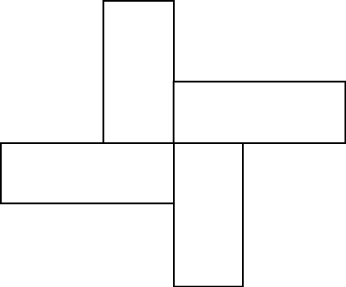

1. Fruitful Functions and Variable Scope¶
Quick Overview of Day
Practice creating a function that draws a shape with the turtle module. Introduce fruitful functions (functions that return values). Discuss local and global scope. Work on practice problems, in which students create functions that return values.
- CS20-CP1 Apply various problem-solving strategies to solve programming problems throughout Computer Science 20.
- CS20-FP1 Utilize different data types, including integer, floating point, Boolean and string, to solve programming problems.
- CS20-FP2 Investigate how control structures affect program flow.
- CS20-FP3 Construct and utilize functions to encapsulate reusable pieces of code.
1.1. Warmup Problem¶
Draw the image above using the Python turtle module. You must define a function as part of your solution!
1.2. Functions that Return Values¶
Most functions require arguments, values that control how the function does its job. For example, if you want to find the absolute value of a number (defined as the distance of a number from zero on a number line), you have to indicate what the number is. Python has a built-in function for computing the absolute value:
In this example, the arguments to the abs function are 5 and -5.
Note
The variables inside the function are called parameters, and the values that are passed to them when the function is called are arguments. For example, when we defined a function like def draw_square(some_turtle, side_length):, some_turtle and side_length are parameters. When we call that function, like draw_square(tess, 100), tess and 100 are arguments.
Some functions take more than one argument. For example the math module contains a function called pow which takes two arguments, the base and the exponent.
Note
Of course, we have already seen that raising a base to an exponent can be done with the ** operator.
Another built-in function that takes more than one argument is max.
max can be sent any number of arguments, separated by commas, and will
return the maximum value sent. The arguments can be either simple values or
expressions. In the last example, 16 is returned, since it is larger than 11,
15, and 0. Note that max also works on lists of values.
Notice that each of the above functions return values that can be used to build more complex expressions.
So an important difference between these functions and ones like draw_square or draw_rectangle is that draw_square was not executed because we wanted it to compute a value — on the contrary, we wrote draw_square because we wanted it to execute a sequence of steps that caused the turtle to draw a specific shape.
Functions that return values are sometimes called fruitful functions. A function that doesn’t return a value can be simply called a function, or if we want to make it extremely clear, a non-fruitful function.
Fruitful functions still allow the user to provide information (arguments). However there is now an additional piece of data that is returned from the function.

How do we write our own fruitful function? Let’s start by creating a very simple
mathematical function that we will call square. The square function will take one number
as a parameter and return the result of squaring that number. Here is the
black-box diagram with the Python code following.

The return statement is followed by an expression which is evaluated. Its
result is returned to the caller as the “fruit” of calling this function.
Because the return statement can contain any Python expression we could have
avoided creating the temporary variable squared_value and simply used
return original_number * original_number.
Try modifying the square function above to see that this works just the same.
On the other hand, using temporary variables like squared_value in the program above makes debugging easier. These temporary variables are examples of local variables, which will be explained further in the next section.
Notice something important here. The name of the variable we pass as an
argument — to_square — has nothing to do with the name of the formal parameter
— original_number. It is as if original_number = to_square is executed when square is called. It doesn’t matter what the value was named in
the caller. In square, it’s name is original_number. You can see this very clearly in
codelens, where the global variables (variables defined outside of any function) and the local variables for the square function are in separate boxes.
As you step through the example in codelens below, notice that the return statement not only causes the function to return a value, but it also returns the flow of control back to the place in the program where the function call was made.
Note
The call to a function terminates after the execution of a return statement. This is fairly obvious if the return statement is the last statement in the function, but we will see later where it makes sense to have a return statement even when other statements follow, and the further statements are not executed.
(more_function_details_codelens_square)
Another important thing to notice as you step through this codelens demonstration is the movement of the red and green arrows. Codelens uses these arrows to show you where it is currently executing. Recall that the red arrow always points to the next line of code that will be executed. The light green arrow points to the line that was just executed in the last step.
When you first start running this codelens demonstration you will notice that there is only a red arrow and it points to line 1. This is because line 1 is the next line to be executed and since it is the first line, there is no previously executed line of code.
When you click on the forward button, notice that the red arrow moves to line 5, skipping lines 2 and 3 of the function (and
the light green arrow has now appeared on line 1). Why is this?
The answer is that function definition is not the same as function execution. Lines 2
and 3 will not be executed until the function is called on line 6. Line 1 defines the function and the name square is added to the
global variables, but that is all the def does at that point. The body of the function will be executed later. Continue to click
the forward button to see how the flow of control moves from the call, back up to the body of the function, and then finally back to line 7, after the function has returned its value and the value has been assigned to result.
Finally, there is one more aspect of function return values that should be noted. All Python functions return the value None unless there is an explicit return statement with
a value other than None.
Consider the following common mistake made by beginning Python
programmers. As you step through this example, pay very close attention to the return
value in the local variables listing. Then look at what is printed when the
function returns.
(more_function_details_codelens_square_bad)
The problem with this function is that even though it prints the value of the square, that value will not be returned to the place
where the call was made. Since line 6 uses the return value as the right hand side of an assignment statement, the evaluation of the
function will be None. In this case, result will refer to that value after the assignment statement and therefore the result printed in line 7 is incorrect. Typically, functions will return values that can be printed or processed in some other way by the caller.
1.2.1. Check Your Understanding¶
- You should never use a print statement in a function definition.
- Although you should not mistake print for return, you may include print statements inside your functions.
- You should not have any statements in a function after the return statement. Once the function gets to the return statement it will immediately stop executing the function.
- This is a very common mistake so be sure to watch out for it when you write your code!
- You must calculate the value of x+y+z before you return it.
- Python will automatically calculate the value x+y+z and then return it in the statement as it is written
- A function cannot return a number.
- Functions can return any legal data, including (but not limited to) numbers, strings, turtles, etc.
variable-scope1: What is wrong with the following function definition:
def add_em(x, y, z):
return x + y + z
print('the answer is', x + y + z)
- None
- We have accidentally used print where we mean return. Therefore, the function will return the value None by default. This is a VERY COMMON mistake so watch out! This mistake is also particularly difficult to find because when you run the function the output looks the same. It is not until you try to assign its value to a variable that you can notice a difference.
- The value of x + y + z
- Careful! This is a very common mistake. Here we have printed the value x+y+z but we have not returned it. To return a value we MUST use the return keyword.
- The string 'x + y + z'
- x+y+z calculates a number (assuming x+y+z are numbers) which represents the sum of the values x, y and z.
variable-scope2: What will the following function return?
def add_em(x, y, z):
print(x + y + z)
1.3. Variables and Parameters are Local¶
An assignment statement in a function creates a local variable for the
variable on the left hand side of the assignment operator. It is called local because this variable only
exists inside the function and you cannot use it outside. For example,
consider again the square function:
(bad_local)
If you press the ‘last >>’ button you will see an error message.
When we try to use squared_value on line 6 (outside the function) Python looks for a global
variable named squared_value but does not find one. This results in the
error: Name Error: 'squared_value' is not defined.
The variable squared_value only exists while the function is being executed —
we call this its lifetime.
When the execution of the function terminates (returns),
the local variables are destroyed. Codelens helps you visualize this
because the local variables disappear after the function returns. Go back and step through the
statements paying particular attention to the variables that are created when the function is called.
Note when they are subsequently destroyed as the function returns.
Formal parameters are also local and act like local variables.
For example, the lifetime of original_number begins when square is
called, and its lifetime ends when the function completes its execution.
So it is not possible for a function to set some local variable to a value, complete its execution, and then when it is called again next time, recover the local variable. Each call of the function creates new local variables, and their lifetimes expire when the function returns to the caller.
On the other hand, it is legal for a function to access a global variable. However, this is considered bad form by nearly all programmers and should be avoided. Look at the following, nonsensical variation of the square function.
Although the bad_square function works, it is silly and poorly written. We have done it here to illustrate
an important rule about how variables are looked up in Python.
First, Python looks at the variables that are defined as local variables in
the function. We call this the local scope. If the variable name is not
found in the local scope, then Python looks at the global variables,
or global scope. This is exactly the case illustrated in the code above.
power is not found locally in bad_square but it does exist globally.
The appropriate way to write this function would be to pass power as a parameter.
Note
For practice, you should rewrite the bad_square example above to have a second parameter called power.
There is another variation on this theme of local versus global variables. Assignment statements in the local function cannot change variables defined outside the function, without further (discouraged) special syntax. Consider the following codelens example:
(codelens_powerof_bad)
Now step through the code. What do you notice about the values of variable power
in the local scope compared to the variable power in the global scope?
The value of power in the local scope was different than the global scope.
That is because in this example power was used on the left hand side of the
assignment statement power = p. When a variable name is used on the
left hand side of an assignment statement Python creates a local variable.
When a local variable has the same name as a global variable we say that the
local shadows the global. A shadow means that the global variable cannot
be accessed by Python because the local variable will be found first. This is
another good reason not to use global variables. As you can see,
it makes your code confusing and difficult to
understand.
To cement all of these ideas even further lets look at one final example.
Inside the square function we are going to make an assignment to the
parameter original_number There’s no good reason to do this other than to emphasize
the fact that the parameter original_number is a local variable. If you step through
the example in codelens you will see that although original_number is 0 in the local
variables for square, the original_number in the global scope remains 2. This is confusing
to many beginning programmers who think that an assignment to a
formal parameter will cause a change to the value of the variable that was
used as the actual parameter, especially when the two share the same name.
But this example demonstrates that that is clearly not how Python operates.
(codelens_change_parm)
1.3.1. Check Your Understanding¶
-
variable-scope3: What is a variable’s scope?
- Its value
- Value is the contents of the variable. Scope concerns where the variable is "known".
- The area in the code where a variable can be accessed.
- Its name
- The name of a variable is just an identifier or alias. Scope concerns where the variable is "known".
-
variable-scope4: What is a local variable?
- A temporary variable that is only used inside a function
- Yes, a local variable is a temporary variable that is only known (only exists) in the function it is defined in.
- The same as a parameter
- While parameters may be considered local variables, functions may also define and use additional local variables.
- Another name for any variable
- Variables that are used outside a function are not local, but rather global variables.
-
variable-scope5: Can you use the same name for a local variable as a global variable?
- Yes, and there is no reason not to.
- While there is no problem as far as Python is concerned, it is generally considered bad style because of the potential for the programmer to get confused.
- Yes, but it is considered bad form.
- It is generally considered bad style because of the potential for the programmer to get confused. If you must use global variables (also generally bad form) make sure they have unique names.
- No, it will cause an error.
- Python manages global and local scope separately and has clear rules for how to handle variables with the same name in different scopes, so this will not cause a Python error.
1.4. Practice Problems¶
Try the following practice problems to be sure you understand how to create fruitful functions. Your functions have to return the correct value – using print() will not work. When you run your code for these questions, your code will automatically be checked with a number of test cases to see if your function works in all situations. You will be able to see any situations in which your function does not provide the correct answer.
Note
The only thing you need to do for the following is to complete the function definition! You do not need to call the function, as that will be done automatically for you.
1.4.1. Double It¶
The parameter the_number needs to be doubled. Return the doubled value of the number that is passed in.
double_it(5) → 10
double_it(0) → 0
double_it(-4) → -8
1.4.2. Double It Positive¶
The parameter the_number needs to be doubled, but only if the_number is positive. Return the doubled value of the number that is passed in if the_number is positive. If the_number is negative, return -1. If the_number is 0, return 0.
double_it_positive(5) → 10
double_it_positive(0) → 0
double_it_positive(-4) → -1
1.4.3. Wear the Right Thing¶
Write a function which returns the type of clothing you should wear, based on the parameter temperature. If the temperature is below -10, you will wear a parka and toque (return “parka and toque”). If the temperature is between -10 and 0, wear a toque (return “toque”). If the temperature is greater than 0 but less than 10, wear a sweater (return “sweater”). If the temperature is between 10 and 20, wear a t-shirt (return “t-shirt”). If the temperature is greater than 20, wear shorts (return “shorts”).
wear_the_right_thing(25) → "shorts"
wear_the_right_thing(-25) → "parka and toque"
wear_the_right_thing(-5) → "toque"